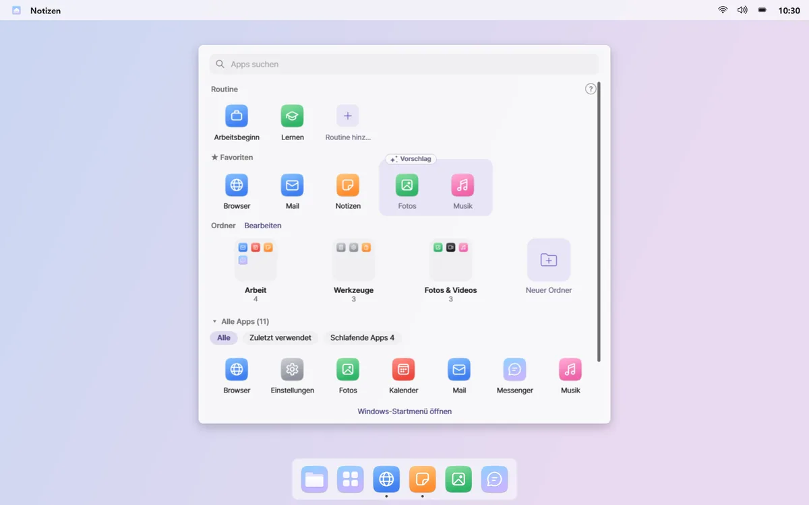
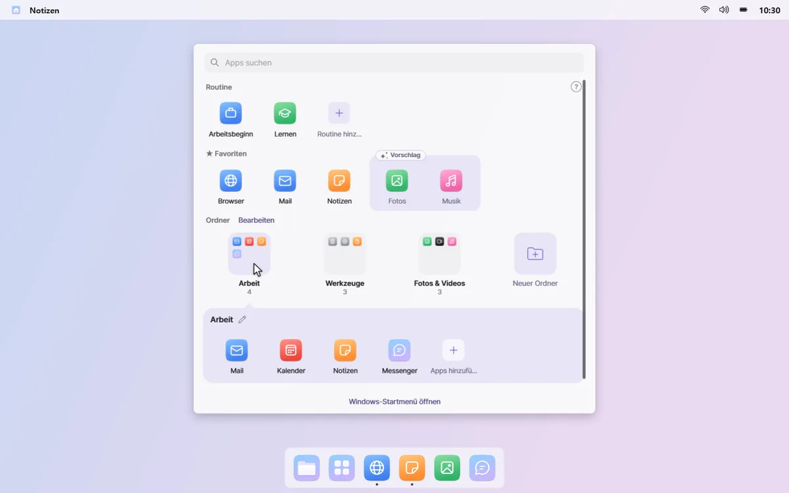
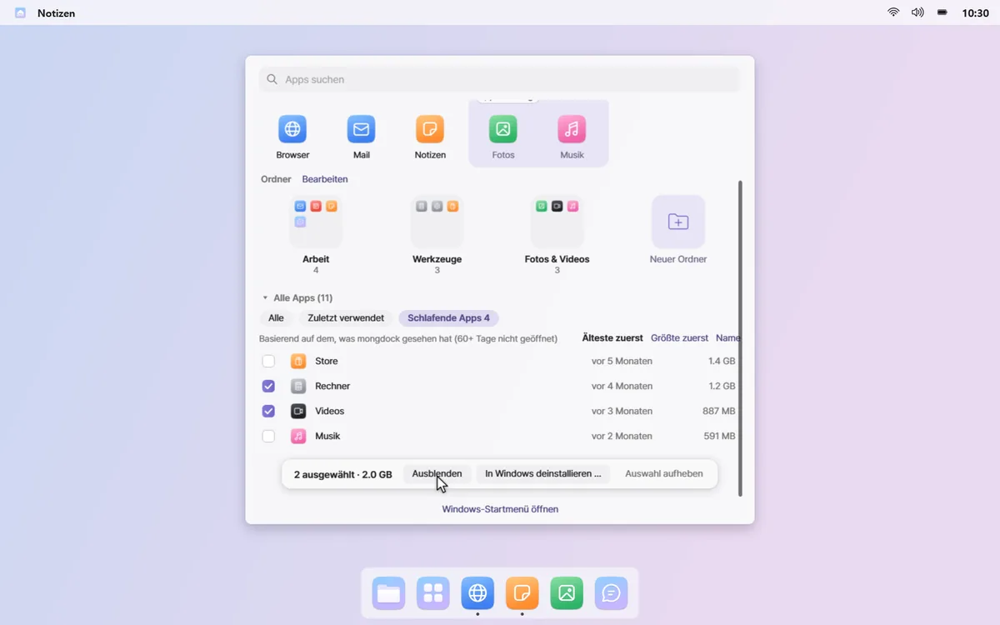

Die Apps, die du nutzt, immer vorne
Klick im Dock auf „Alle Apps“, und in der Bildschirmmitte öffnet sich ein Bereich. Favoriten, Ordner mit deinen genutzten Apps und alle Apps sind schon sortiert und bereit.
Vergessene Apps · Einmal installiert, nie geöffnet – und die Liste wird immer länger.
Sofort lostippen
Der Bereich verdeckt nicht den ganzen Bildschirm, und das Suchfeld ist sofort bereit. Deine Routinen liegen in der obersten Reihe, einen Klick entfernt.


Favoriten, plus ein paar Vorschläge
Heft die Apps, die du am häufigsten öffnest, an die Favoritenreihe. Apps, die du zuletzt oft geöffnet hast, erscheinen als gestrichelte Vorschläge; klick auf +, um sie hinzuzufügen.

Ordner nur mit dem, was du nutzt
Apps landen in Ordnern wie Arbeit, Kommunikation und Spielen, und jeder enthält nur Apps, die du zuletzt genutzt hast. Im Bearbeitungsmodus benennst du Ordner per Klick um und ordnest sie neu.

Schlafende Apps aufräumen
Sieh dir „schlafende Apps“ an – die du seit über 60 Tagen nicht geöffnet hast – samt belegtem Speicher. Blende sie im Bereich aus oder wähl ein paar aus, um sie über Windows zu deinstallieren.

Der App-Verlauf hinter Vorschlägen und Ordnern bleibt auf deinem PC. Rechtsklick auf eine freie Stelle im Bereich und „Genutzte Apps merken“ ausschalten – dann stoppt er und wird gelöscht. Datenschutzerklärung lesen
Gut zu wissen
- Beim Deinstallieren schlafender Apps öffnet sich nacheinander die Windows-Deinstallation jeder App. mongdock entfernt selbst nichts, und Apps, die sich so nicht entfernen lassen, sind in der Liste markiert.